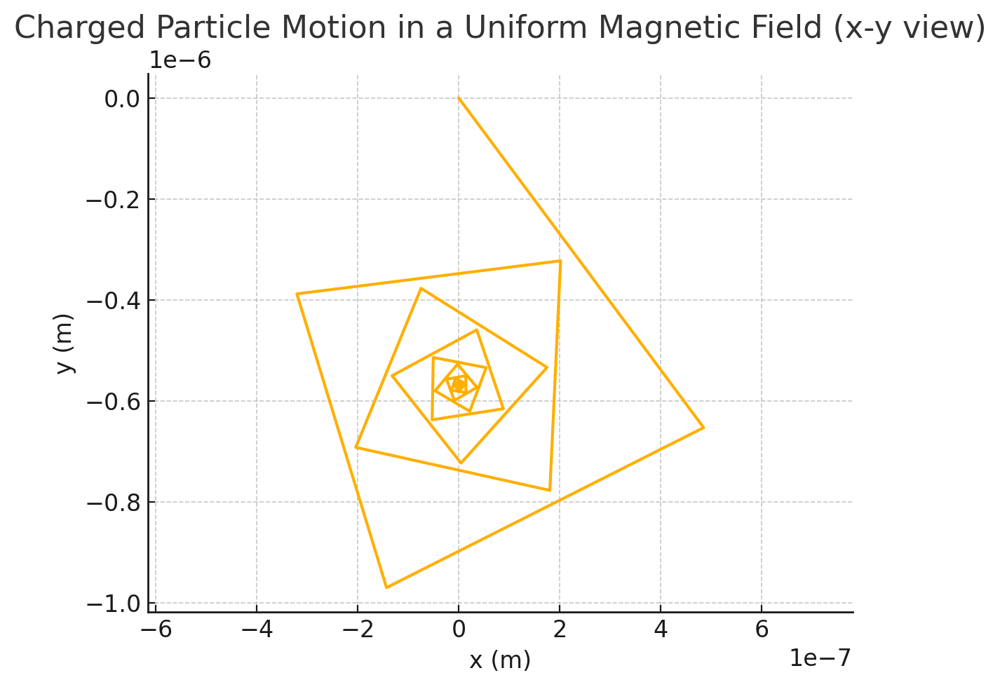
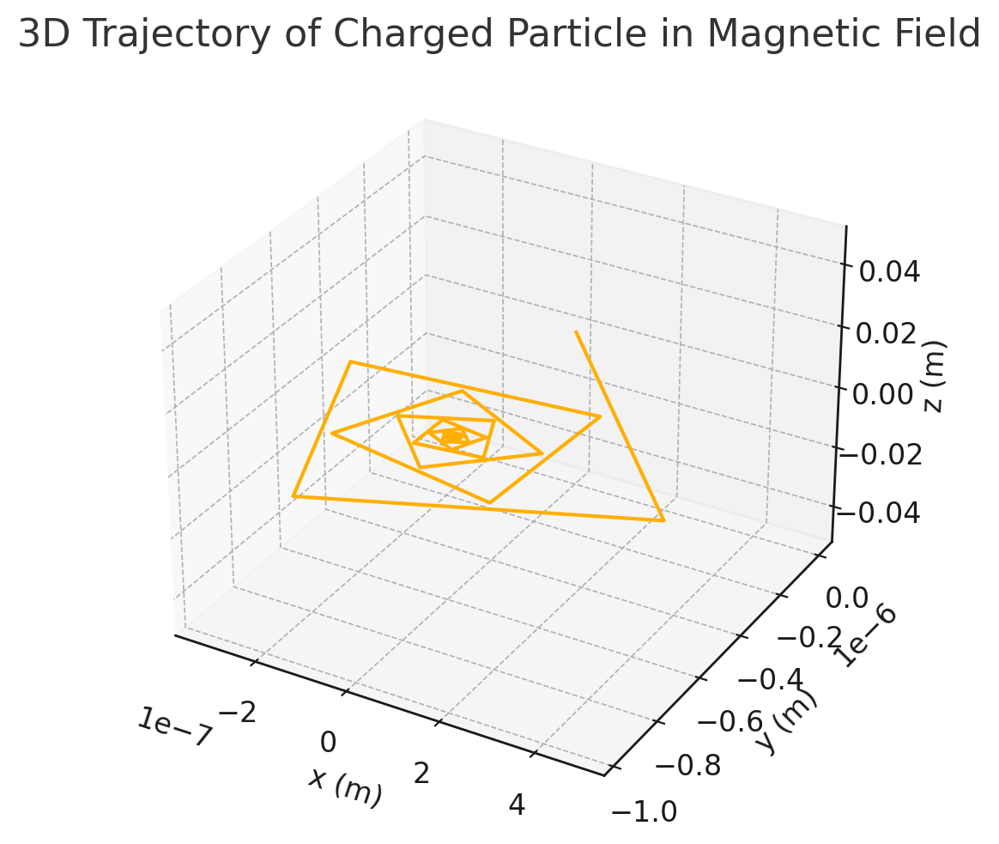

Problem 1
1 Why the Lorentz Force Matters
| Field | Typical Devices | Why \(\mathbf{F}=q\bigl(\mathbf{E}+\mathbf{v}\times\mathbf{B}\bigr)\) Is Central |
|---|---|---|
| Particle physics | Cyclotrons, synchrotrons, beamlines | Bends, focuses, & accelerates beams with nm precision. |
| Plasma confinement | Tokamaks, stellarators, Z-pinches | Determines gyration radius, drifts, & stability. |
| Astrophysics | Solar wind, cosmic rays, auroras | Shapes helical orbits and large-scale drifts in magnetospheres. |
| Analytical chemistry | Mass spectrometers | Separates ions by \(m/q\) via controlled \(E\)–\(B\) fields. |
Understanding—and visualising—charged-particle motion under combined \(\mathbf{E}\) and \(\mathbf{B}\) fields lets you predict trajectories, design instruments, and diagnose plasmas.

2 Governing Equations
2.1 Newton–Lorentz System (non-relativistic)
For relativistic speeds (\(v\!\sim\!c\)), add the Lorentz factor \(\gamma\); otherwise this two-equation system suffices.
2.2 Special Cases to Build Intuition
| Field Configuration | Analytic Trajectory | Key Quantities |
|---|---|---|
| Uniform \(\mathbf{B}=B\hat{z}\) only | Perfect circle in \(x\)–\(y\) plane, uniform translation in \(z\). | Larmor (cyclotron) frequency \(\omega_c = qB/m\); radius $ r_L = v_\perp/\omega_c$. |
| Uniform \(\mathbf{E}=E\hat{x}\) only | Constant acceleration along \(x\). | Classical kinematics. |
| Crossed \(\mathbf{E}\perp\mathbf{B}\) | Helix whose guiding center drifts at \(\mathbf{v}_{E\times B} = \mathbf{E}\times\mathbf{B}/B^{2}.\) | No net acceleration in guiding center frame. |
| Non-uniform \(\mathbf{B}(r)\) | Gradient-\(\mathbf{B}\) & curvature drifts; complex. | Requires numeric integration. |
3 Simulation Road-Map (Conceptual)
Tip: start simple (uniform fields), confirm analytics, then layer complexity.
- State Vector \(\boldsymbol{y}(t)=\bigl[x,\,y,\,z,\,v_x,\,v_y,\,v_z\bigr]^{\!\top}\)
- Derivatives
$$ \dot{\boldsymbol{y}} = \begin{bmatrix} v_x \ v_y \ v_z \[2pt] \dfrac{q}{m}(E_x+v_yB_z-v_zB_y) \ \dfrac{q}{m}(E_y+v_zB_x-v_xB_z) \ \dfrac{q}{m}(E_z+v_xB_y-v_yB_x) \end{bmatrix} $$

- Integrator Fourth-order Runge–Kutta or leap-frog (symplectic; conserves energy in purely magnetic fields).
-
Input Deck Allow the user to vary:
-
\(\mathbf{E},\mathbf{B}\) (vectors or analytic functions of space)
- initial \(\mathbf{r}_0,\mathbf{v}_0\)
- \(q, m\) (compare electron, proton, ion)
- Time Step Keep \(\Delta t \ll 1/\omega_c\) to resolve gyration.
4 Parameter-Exploration Scenarios
| Scenario | Parameter Sweep | Physical Insight to Capture |
|---|---|---|
| Simple gyration | Vary \(B\) while fixing \(v_\perp\). | Radius ∝ \(1/B\); frequency ∝ \(B\). |
| \(E\!\times\!B\) drift | Keep \(\mathbf{B}\) fixed, scan \(E\). | Linear guiding-center drift; helical pitch changes. |
| Magnetron-like motion | Weak \(\mathbf{E}\) radial, strong axial \(\mathbf{B}\). | Closed “racetrack” orbits (Penning trap). |
| Gradient-B drift | Introduce \(B(r)=B_0(1+\alpha r)\). | Show vertical drift of guiding center (tokamak). |
| Mass spectrometry | Same \(\mathbf{E},\mathbf{B}\); vary \(m/q\). | Spatial separation at detector plane; resolution vs. field strengths. |
5 Visualisation Blueprint
- 3-D Trajectory Plot Colour by time or speed; annotate start/end.
-
2-D Projections (\(x\!-\!y,\,x\!-\!z\))
-
Circular orbits appear as circles, drift as slope.
- Phase-Space Portraits (\(v_x\) vs. \(x\)) Convey energy conservation or acceleration.
- Parameter Slider Animations (e.g., Larmor radius vs. \(B\)) Quickly demonstrates trends.
6 Connecting to Real Systems
| Real Device | Dominant Field Geometry | Design Metric from Simulation |
|---|---|---|
| Cyclotron | Uniform axial \(B\); accelerating gaps (rf \(E\)). | Radius vs. energy to size magnet poles. |
| Penning trap | Axial \(B\) + quadrupole \(E\). | Confinement times; stability islands. |
| Mass spectrometer (E–B filter) | Perpendicular \(E\) & \(B\). | \(m/q\) resolution curve; plate & magnet specs. |
| Tokamak plasma | Strong toroidal \(B\); electric fields via induced current. | Drift losses; confinement scaling with \(B\). |
7 Suggested Report / Notebook Structure
- Introduction & Motivation (applications table)
-
Theory
-
Derivation of Lorentz equations
- Analytical solutions for benchmark cases
-
Numerical Methodology
-
Integrator choice & stability criteria
- Validation against analytic cases
-
Results
-
Scenario-wise trajectories & plots
- Parameter-sweep graphs (e.g., \(r_L(B)\))
-
Discussion
-
Physical interpretation (Larmor radius, drifts)
- Relevance to chosen device(s)
- Limitations: neglect of collisions, radiation, relativity
-
Extensions (next steps)
-
Relativistic upgrade (\(\gamma\)), synchrotron radiation loss
- Non-uniform, time-varying fields
- Many-particle interactions (space-charge effects)